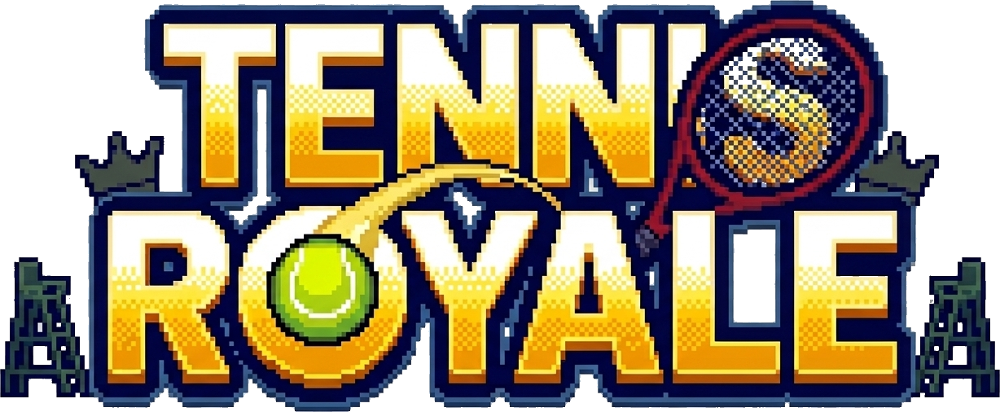

Fotos do Jogo

Tela de Início

Durante a Partida

Fim de Jogo

Domine a quadra. Elimine o seu adversario!
Tennis Royale é um jogo de tênis 2D desenvolvido em Python com Pygame. Dois jogadores se enfrentam em uma quadra em partidas locais e competitivas.
O objetivo é simples: rebata a bola para o lado do adversário sem deixá-la cair no seu lado. Vence quem sobreviver por ultimo!
O jogo suporta dois jogadores simultaneamente no mesmo teclado, com controles independentes para cada lado da quadra.
Tela de Início
Durante a Partida
Fim de Jogo
Execute o jogo com o comando python main.py no terminal.
Jogador 1: Use W e S para mover sua raquete para cima e para baixo.
Jogador 2: Use ↑ e ↓ para mover sua raquete pelo lado direito da quadra.
Rebata a bola e vença o ponto. Quem tirar as 5 vidas do adversario primeiro vence a partida!
> Adicionando cenarios aleatorios com quadras que mudam dependendo do cenario.
> Jogador adicionado com comando básico de movimentação.
> Adicionado limite para que o jogador só consiga andar no seu lado da quadra.
> Bola adicionada com mecanica de saque e física.
> Jogador agora tem a mecanica de rebater a bola.
> Jogador 2 adicionado, com mecanica de confronto e detectar pontuação
> Agora a bola possui animação
> Agora os dois jogadores podem jogar o jogo com controles.
> Agora os jogadores tem vida, em que cada ponto tira a vida do adversario.
> Agora durante a gameplay, tem som ao rebater a bola, quando a bola quica e tem torcida ao fazer ponto.
> Agora os jogadores tem animação ao ficarem parados.
> Agora o jogo tem poderes que aparecem na quadra e que afetam o adversario.
> Efeitos animados, sons e melhorias de design foram implementadas para melhorar o jogo
Baixe o jogo clicando aqui
Baixar